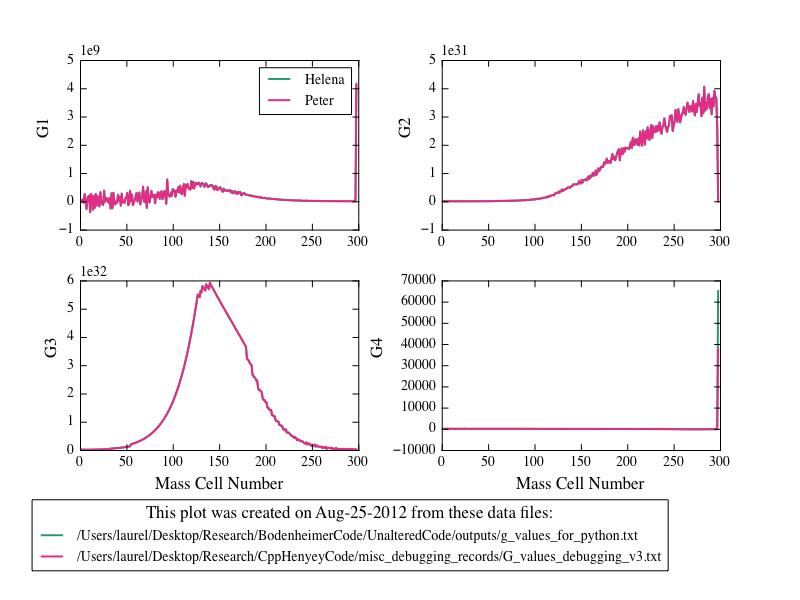

Figure
1
Date & Time: Aug. 27, 2012
Location: campus
Computing context: MachoMac
(/Desktop/Research/CppHenyeyCode/src, /Desktop/Research/BodenheimerCode/UnalteredCode)
From last time:
Make the appropriate revisions to Helena's G4J calculation subroutine.
Done, but now I'm getting some wonky results out of my code. See Figure 1 for details.
Figure
1
Check whether or not Helena and Peter's G values agree, now that I'm reading in the full-precision MLRTP values into Helena.
Done. Figure 2 seems to show good agreement between the two.

Figure
2
To do today:
The dX values generated by the two codes still differ markedly, though.
Insert a figure illustrating the existing dX differences
And start trying to figure out what's still causing them.
It's got to be something in how Helena's CDE values are being calculated. So, need to figure out a way to compare those between the two codes.
Print out the CDE values from Helena
Print out the CDE values from Peter's code
Look at the Peter/Helena ratios (maybe plot them?)
Update the wordpress blog.
To keep in mind for later:
For the 1 Mjup model: do the Peter and Helena models' dX values (raw) now agree, too?